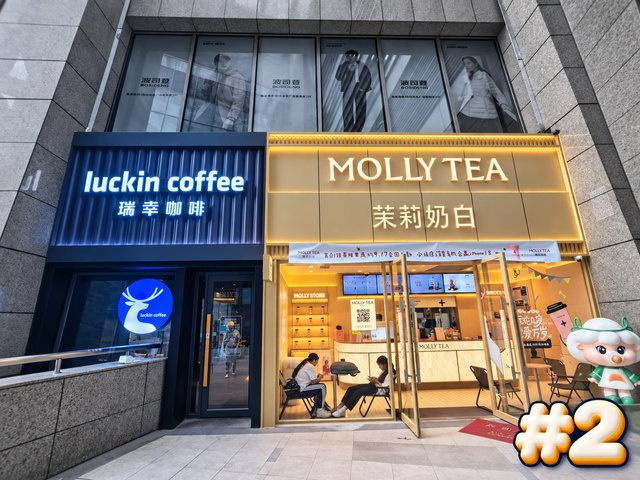#2P02 · 原表 4双店门面双色分区处理说明（工作人员）瑞幸一侧保留偏冷色、茉莉奶白一侧保留暖色，其余背景降低饱和；两家店名与斜坡扶手不改。保留：两家相邻门面、台阶和扶手查看原图
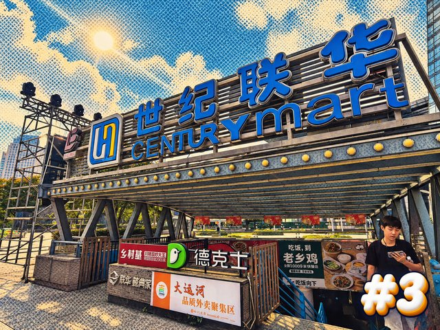#3P03 · 原表 10入口复古游戏网点处理说明（工作人员）天空和阴影加稀疏网点，蓝色招牌保持实色与可读字，顶棚和地下入口仍完整。保留：入口顶棚、世纪联华文字、下行空间查看原图
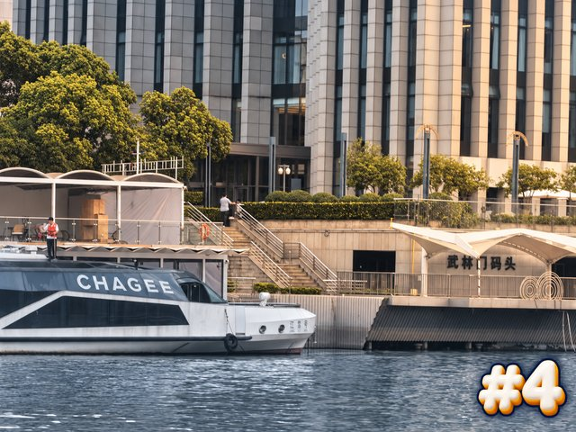#4P04 · 原表 16码头冷暖分离处理说明（工作人员）河面冷灰，对岸固定码头暖灰；保留武林门码头文字、岸阶与背景大楼，游船降低对比。保留：码头文字、台阶、河岸及背景大楼查看原图
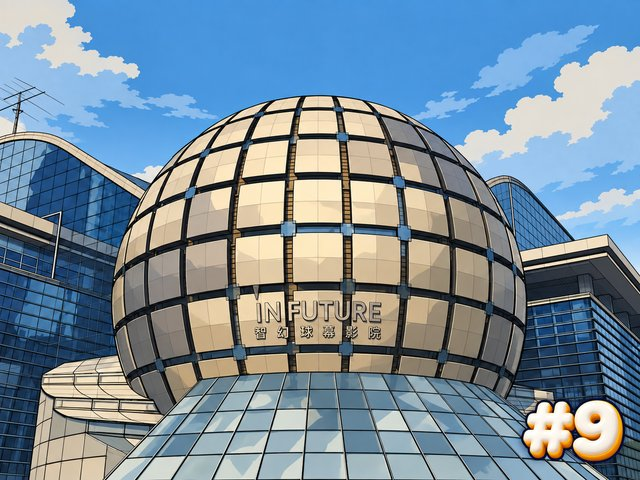#9P09 · 原表 13球幕影院游戏漫画处理说明（工作人员）球体分格和侧楼改为硬边三阶阴影与适量网点，仍保留底部玻璃支撑、球体完整轮廓和原文字。保留：球体分格、底部支撑及影院文字查看原图
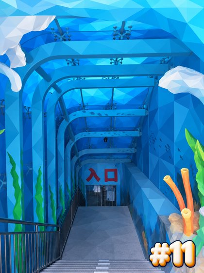#11P11 · 原表 15海洋通道低多边形处理说明（工作人员）壁画配色归并为较大蓝色多边形，梁、珊瑚轮廓和红色入口文字保持原位置，台阶清楚。保留：蓝色拱形梁、海洋壁画、下行阶梯查看原图
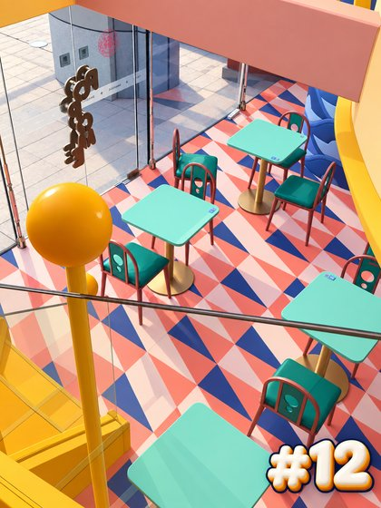#12P12 · 原表 19几何地面扁平色块处理说明（工作人员）三角地面用原色平涂，黄球和楼梯用清晰轮廓，青绿桌椅降低纹理不移位。保留：黄色球头柱、三角拼色地面、玻璃和桌椅查看原图
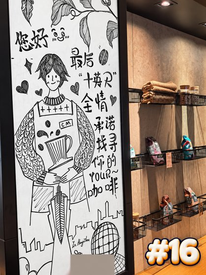#16P16 · 原表 1黑板反相＋木色保留处理说明（工作人员）只将黑板区域变成白底黑线，木墙、架子和相邻关系保持照片质感；底部手指用小块中性色遮挡。保留：黑板与陈列架的相邻关系、咖啡主题、木墙查看原图
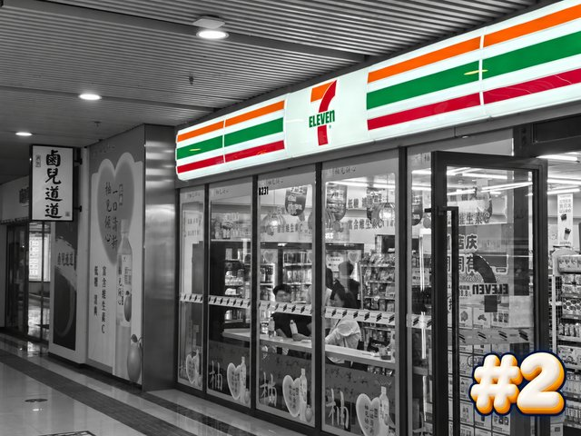#2P02 · 原表 32便利店三色海报处理说明（工作人员）橙绿红门楣保色，其他区域降为自然灰阶，7-Eleven数字及相邻立面仍清晰。保留：三色门楣、7-Eleven、相邻立面查看原图
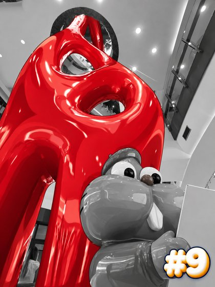#9P09 · 原表 41红色雕塑漫画保色处理说明（工作人员）固定镂空红雕塑用红色硬边阴影，前景棕色形象与周围降灰，保留所有孔洞轮廓。保留：红色镂空主体、所在中庭与附近栏杆查看原图
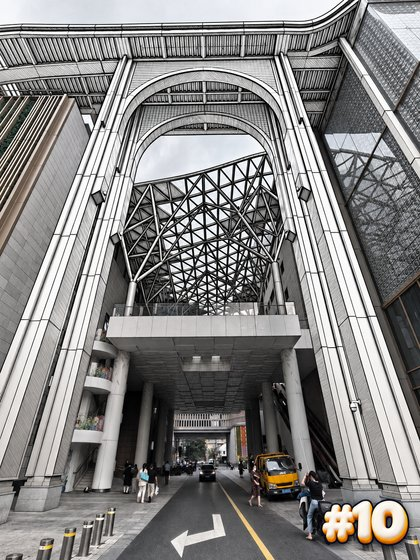#10P10 · 原表 45通道网架深色线描处理说明（工作人员）顶棚交叉网架和大拱转黑白线描，道路与周围低饱和照片底，保留地面箭头。保留：大拱、网架、道路箭头与通道关系查看原图
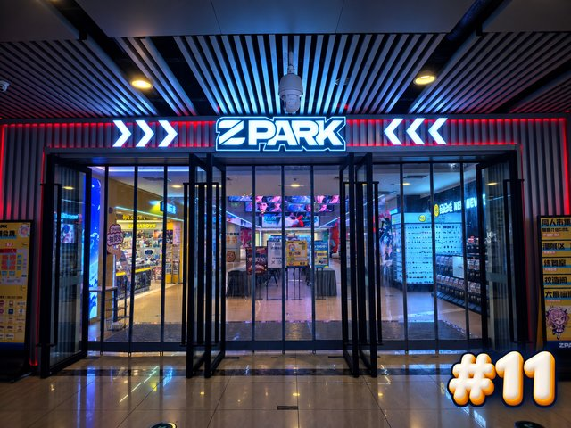#11P11 · 原表 29ZPARK霓虹夜视感处理说明（工作人员）压低背景亮度，保留门框和透明玻璃细节，强化现有冷白箭头与店名字样。保留：ZPARK字样、左右箭头、入口结构查看原图
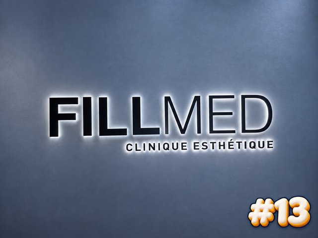#13P13 · 原表 34FILLMED蓝灰金属调色处理说明（工作人员）墙面偏蓝灰，字牌保持清晰白边与黑字，增强原立体阴影，不遮字。保留：完整FILLMED文字与字体布局查看原图
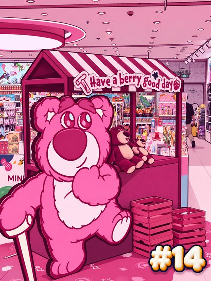#14P14 · 原表 37草莓熊双色漫画处理说明（工作人员）熊与摊位归并粉紫／深红色块，加少量轮廓，屋顶标语、MINISO附近标识和货架保留。保留：草莓熊、粉色摊位、MINISO附近标识查看原图
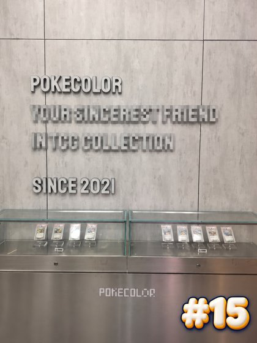#15P15 · 原表 31卡片店广告文案局部弱化处理说明（工作人员）保留POKECOLOR和SINCE 2021，长英文宣传语局部像素化；石墙接缝与下方卡片柜完整。保留：POKECOLOR店名、长段字排、卡片柜查看原图
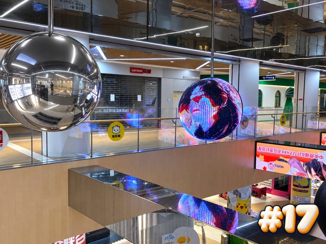#17P17 · 原表 27双球金属游戏渲染处理说明（工作人员）镜面球用硬边灰阶反射，LED球保留低饱和彩色；栏杆和中庭保持实际层级。保留：两球、玻璃栏杆、中庭上下层关系查看原图
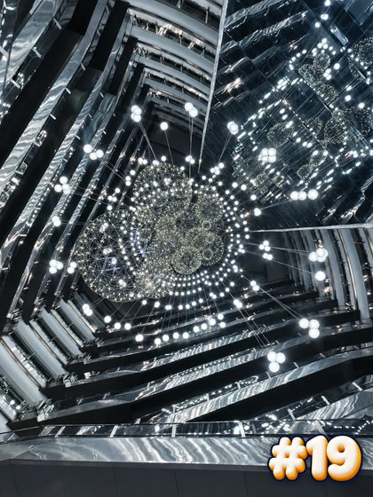#19P19 · 原表 38镜面中庭冷白高对比处理说明（工作人员）吊灯转冷白、整体稍提暗部，中庭矩形框架和多层镜面反射完整，纹理噪声降低。保留：中庭框架、镜面层叠、吊灯整体排列查看原图
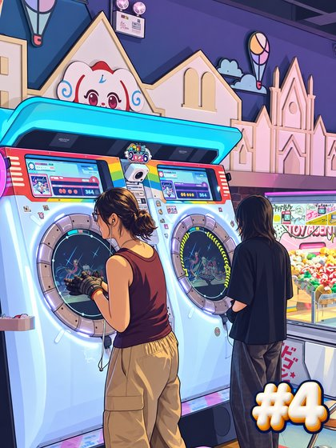#4P04 · 原表 54音游机台赛璐璐处理说明（工作人员）机台用清晰硬边阴影，城堡背景保留原色和轮廓；屏幕内容轻简化，不换成其他游戏。保留：两台机台及后方城堡装饰组合查看原图
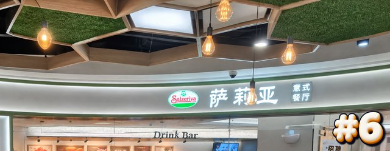#6P06 · 原表 63自拍真实上缘裁取＋镜像校正处理说明（工作人员）只裁出原图上方门头与绿色多边形天花的可见部分，水平翻转恢复文字；轻提对比，不扩图。保留：真实萨莉亚招牌、绿色多边形天花、柜台边界查看原图
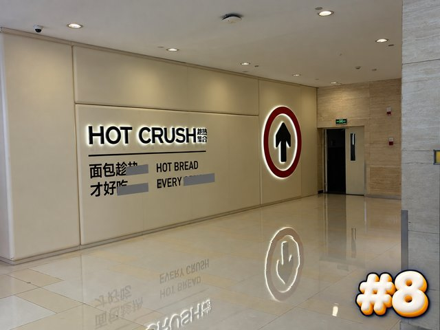#8P08 · 原表 53店名字牌＋标语条遮挡处理说明（工作人员）HOT CRUSH和圆形上行箭头保持清晰，次要中英文宣传口号用窄灰色条遮部分字。保留：HOT CRUSH文字、箭头、墙角与反光地面查看原图
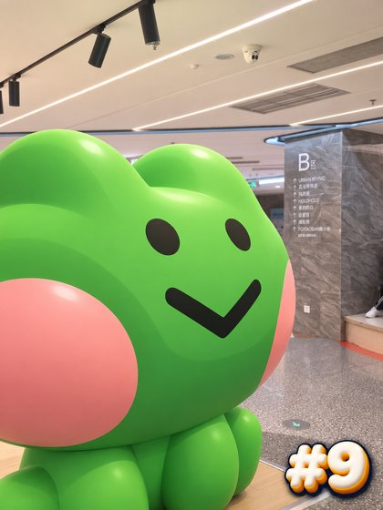#9P09 · 原表 59绿色装置玩具色块处理说明（工作人员）绿色主体归为三阶绿色硬阴影，粉红腮红保色，B2石柱和天花用低对比照片底。保留：绿色主体、B2柱、天花相邻关系查看原图
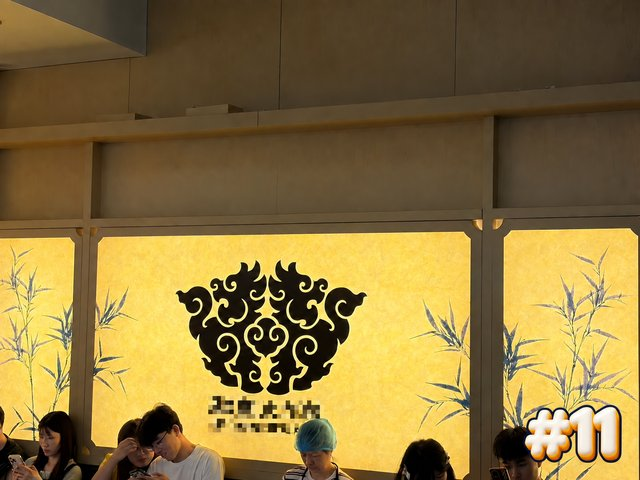#11P11 · 原表 49品牌文字局部像素遮挡处理说明（工作人员）只遮黑图腾下方中文与英文品牌字；黄色灯墙、图腾复杂卷纹、竹纹、墙分格均保留。保留：黑色图腾全貌、黄色灯墙、竹纹和分格查看原图
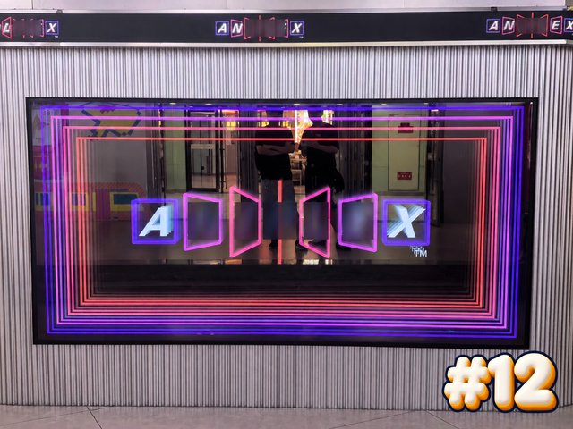#12P12 · 原表 55ANIPLEX字母间隔遮挡处理说明（工作人员）上方重复名称遮挡，中央七框只保留A与X，其余字母局部暗块遮；发光矩形和七框外轮廓不遮。保留：多层霓虹框、字母方框轮廓、竖纹墙查看原图
#15P15 · 原表 56animate展板平面化处理说明（工作人员）左侧真实人物降低对比并局部柔化，不补画其后背景；角色展板用轻色块、框架与右店名清晰。保留：右侧animate字样、展板固定框架与右侧入口查看原图